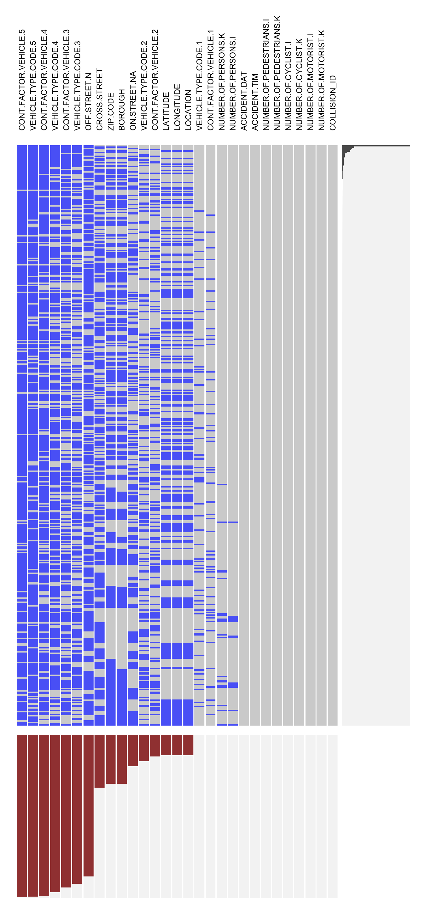
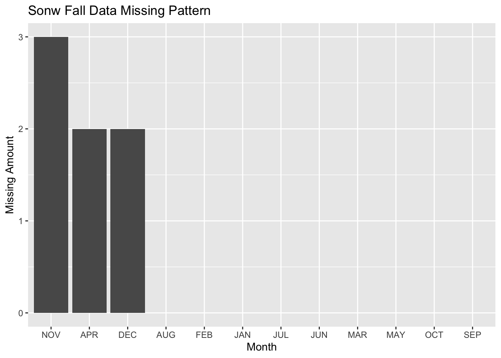

Chapter 4 Missing values
library(readr)
library(tidyr)
library(tidyverse)
library(extracat)
#where I save my original data
df=read.csv("~/Documents/STATW5702 Exploratory Data Analysis and Visualization/Final/Motor_Vehicle_Collisions_-_Crashes.csv", header = T, na.string = c("", "NA"), sep = ",")df$year = substr(df$ACCIDENT.DATE, 7, 10)
df2013_2018 = df[(df$year > "2013" & df$year < "2019"),]
df2013_2018 = df2013_2018 %>%
rename(
CONT.FACTOR.VEHICLE.1 = CONTRIBUTING.FACTOR.VEHICLE.1,
CONT.FACTOR.VEHICLE.2 = CONTRIBUTING.FACTOR.VEHICLE.2,
CONT.FACTOR.VEHICLE.3 = CONTRIBUTING.FACTOR.VEHICLE.3,
CONT.FACTOR.VEHICLE.4 = CONTRIBUTING.FACTOR.VEHICLE.4,
CONT.FACTOR.VEHICLE.5 = CONTRIBUTING.FACTOR.VEHICLE.5,
)
visna(df2013_2018[, -which(names(df2013_2018) %in% c("year"))], sort = "b")
4.1 snow missing pattern
snow_data=read.csv('snowfall.csv')
missing=snow_data%>%group_by(Month)%>%summarise(total.count = sum(na_count))
colnames(missing)[2]='value'library(ggplot2)
ggplot(data=missing,aes(x=fct_reorder(Month,-value),y=value))+
geom_bar(stat="identity")+
xlab('Month')+
ylab('Missing Amount')+
ggtitle("Sonw Fall Data Missing Pattern") ```